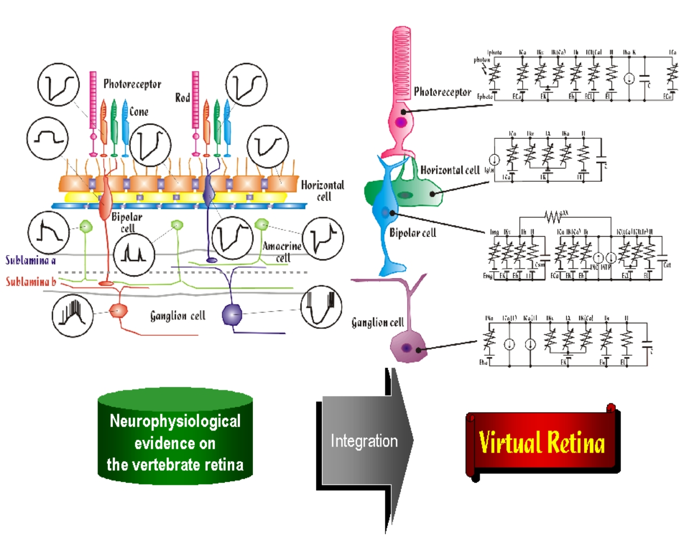

A neuroinformatics study on the model of the vertebrate retina
Yoshimi Kamiyama
Faculty of Information Science and Technology,
Aichi Prefectural University
e-mail: kamiyama@ist.aichi-pu.ac.jp
The purpose of this study is to develop a realistic model of the
retina which replicates the detailed neurophysiological structures and
retinal functions. This approach allows the exploration of the
computational functions performed by retinal neurons including the
role and interaction of ionic channles and receptors, and the
subcellular events such as transmitter release, binding and uptake.

(44k jpeg image)
Click to zoom up
In the present study, mathematical descriptions of the membrane ionic
currents in the retinal neurons, photoreceptors, horizontal cells,
bipolar cells, and ganglion cells are realized. Electrical properties
of each neuron is described by a parallel conductance circuit. The
voltage- and time-dependent characteristics of ionic conductance is
modeled by Hodgkin-Huxley types of equations. The developed model is
capable of accurately reproducing the voltage- and current-clamp
responses of retinal neurons. Any electrical response including light
response which depends on the dynamic balance of different ionic
currents is quantitatively analyzed by the model. Therefore,
hypotheses on how the retina processes visual information are
understood at the cellular and subcellular level. Neuroinformatics
model can be used to summarize what we know and what we need to find
out on the retina.